Part 0: Camera Calibration and 3D Scanning
Camera Frustums Visualization
Two screenshots of the camera frustums visualization in Viser, showing the estimated camera positions and orientations for the captured object.
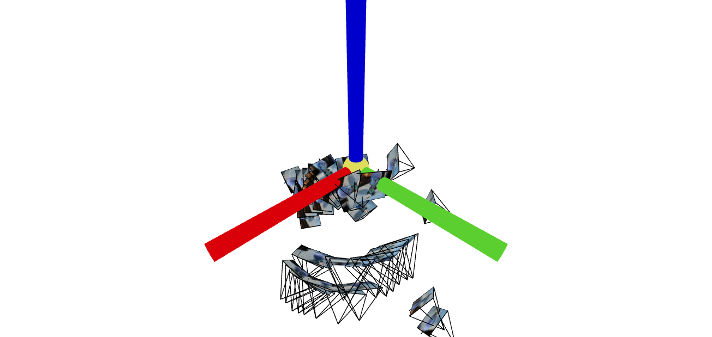
Camera frustums visualization - View 1
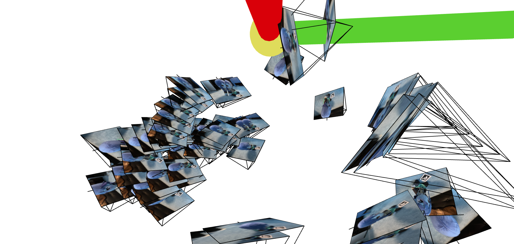
Camera frustums visualization - View 2
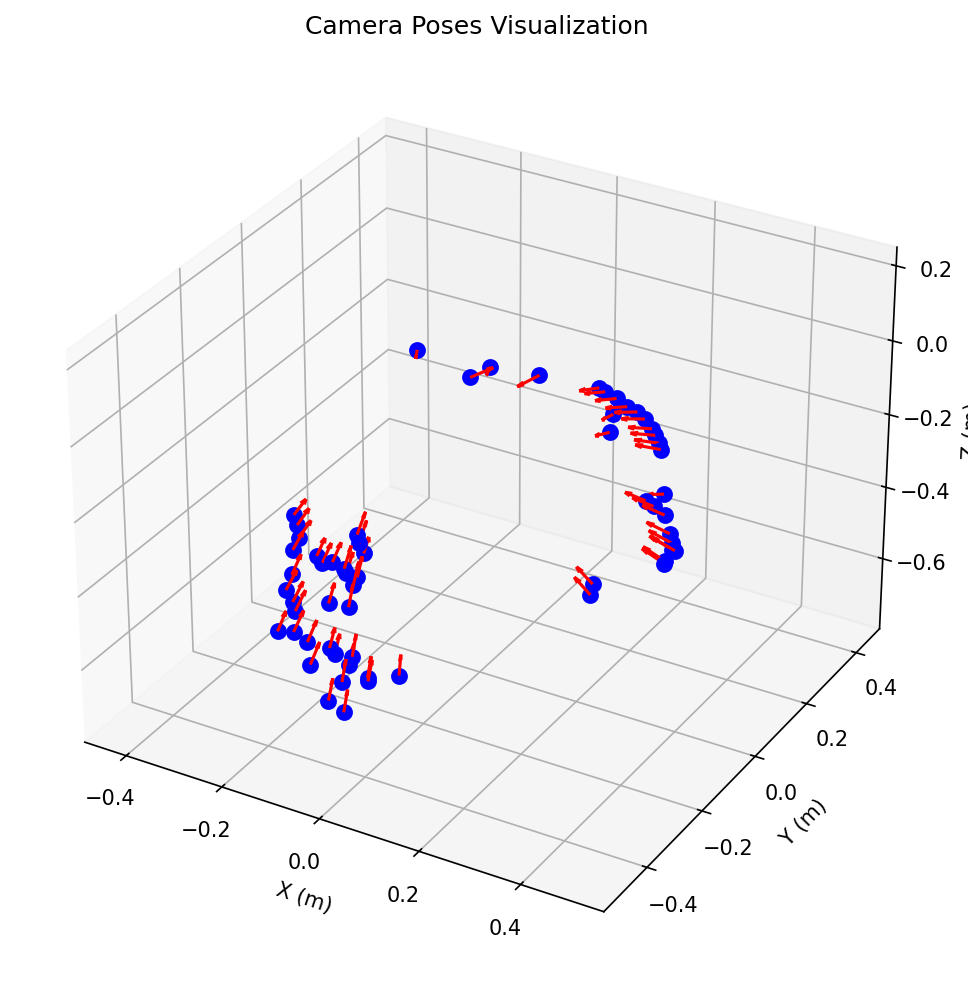
Camera poses visualization - View 3
Part 1: Fit a Neural Field to a 2D Image
Model Architecture
Layers: 4 layers (input → hidden → hidden → output)
Width: 256 neurons per layer (default)
Learning Rate: 1e-2
Positional Encoding Frequency (L): 10 levels (maps 2D → 42D)
Activation Functions: ReLU for hidden layers, Sigmoid for output
Batch Size: 10,000 pixels per iteration
Training Iterations: 2,000
Optimizer: Adam
Loss Function: Mean Squared Error (MSE)
Additional Details: Input coordinates normalized to [0,1], output colors constrained to [0,1] via Sigmoid, uses random pixel sampling with chunked full-image reconstruction
Network Structure: Input(42) → Linear(256) → ReLU → Linear(256) → ReLU → Linear(256) → ReLU → Linear(3) → Sigmoid
Hyperparameter Configurations
The 2×2 grid compares these configurations:
- Small (128, L=4): Hidden dim=128, Positional Encoding levels=4
- Small (128, L=10): Hidden dim=128, Positional Encoding levels=10
- Medium (256, L=4): Hidden dim=256, Positional Encoding levels=4
- Medium (256, L=10): Hidden dim=256, Positional Encoding levels=10
Training Progression
Visualization of the training process on both the provided test image and a custom image.
Provided Test Image
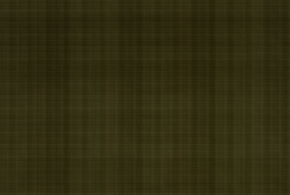
Iteration 0
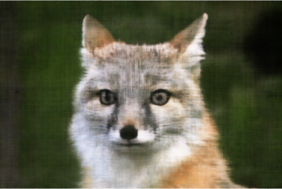
Iteration 500
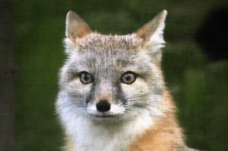
Iteration 1000
Iteration 1500
Iteration 2000
Custom Image
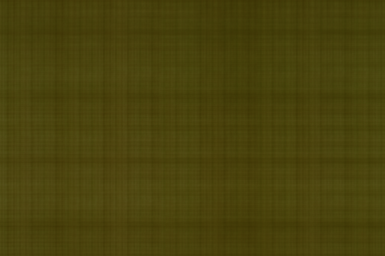
Iteration 0
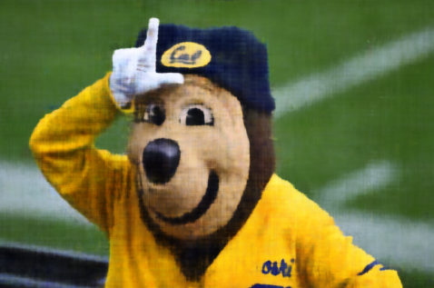
Iteration 500
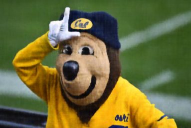
Iteration 1000
Iteration 1500
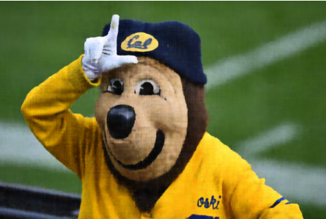
Iteration 2000
Hyperparameter Comparison (2×2 Grid)
Final results for different combinations of positional encoding frequency and network width.
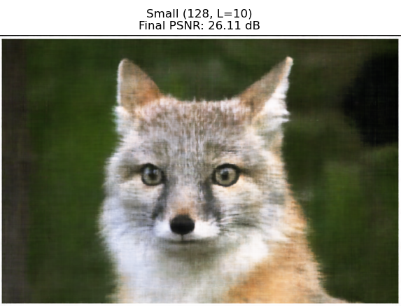
Low PE Frequency, Narrow Width
High PE Frequency, Narrow Width
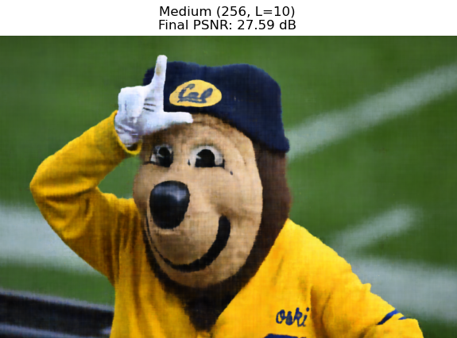
Low PE Frequency, Wide Width
High PE Frequency, Wide Width
PSNR Curve
Peak Signal-to-Noise Ratio over training iterations for one image.
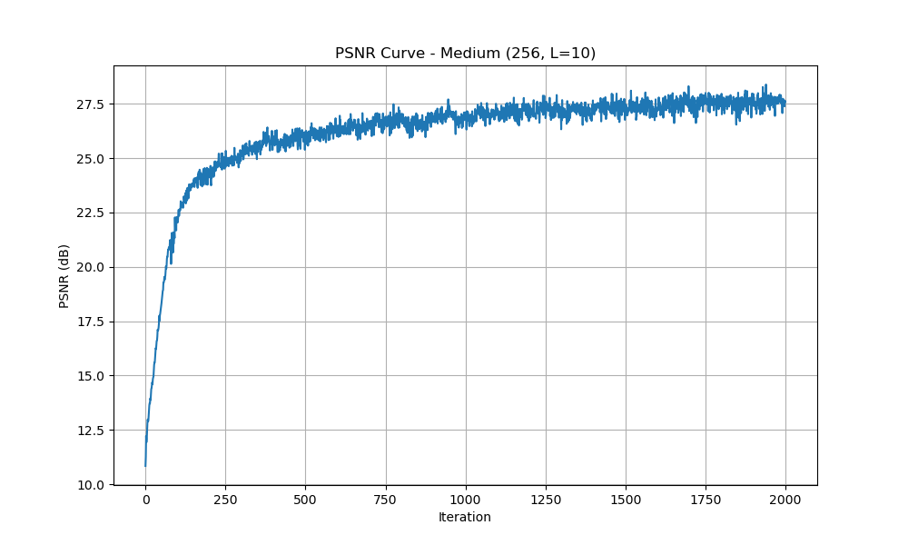
Part 2: Fit a Neural Radiance Field from Multi-view Images
Implementation Description
Ray Generation: Uses camera-to-world transformation matrices with normalized ray directions. Generates rays using meshgrid with consistent coordinate system for both training and validation poses.
Point Sampling: Linear sampling between near/far planes (0.02-0.5 for custom data, 2.0-6.0 for Lego). Uses 64 samples per ray for standard training, 128 for hierarchical sampling with coarse-to-fine approach.
NeRF Model: EnhancedNeRF with positional encoding (L=20 for positions, L=8 for directions). 6-layer MLP with skip connections, 256 hidden units, dropout=0.1. Outputs density (ReLU) and view-dependent color (Sigmoid).
Volume Rendering: Implements discrete volume rendering equation with transmittance computation using cumulative sums. Handles batched rendering for memory efficiency.
Training: Adam optimizer (lr=5e-4), batch size=10,000 rays, MSE loss, gradient clipping (max_norm=0.25). Tracks validation metrics every 1000 iterations with best model checkpointing.
Data Processing: Automatic scene scale analysis, outlier removal for camera poses, robust dataset loading with error handling.
Model Architecture Details
Positional Encoding: Input (3D) → 123D for positions, Input (3D) → 51D for directions
Network Structure: Input → Linear(256) → ReLU → ... (6 layers) → [Density + Features] → Color MLP
Skip Connection: After layer 3, concatenates encoded input
Outputs: Density (single value, ReLU), Color (3 values, Sigmoid)
Rays and Samples Visualization
Visualization of cameras, rays, and sampled points using Viser (up to 100 rays).
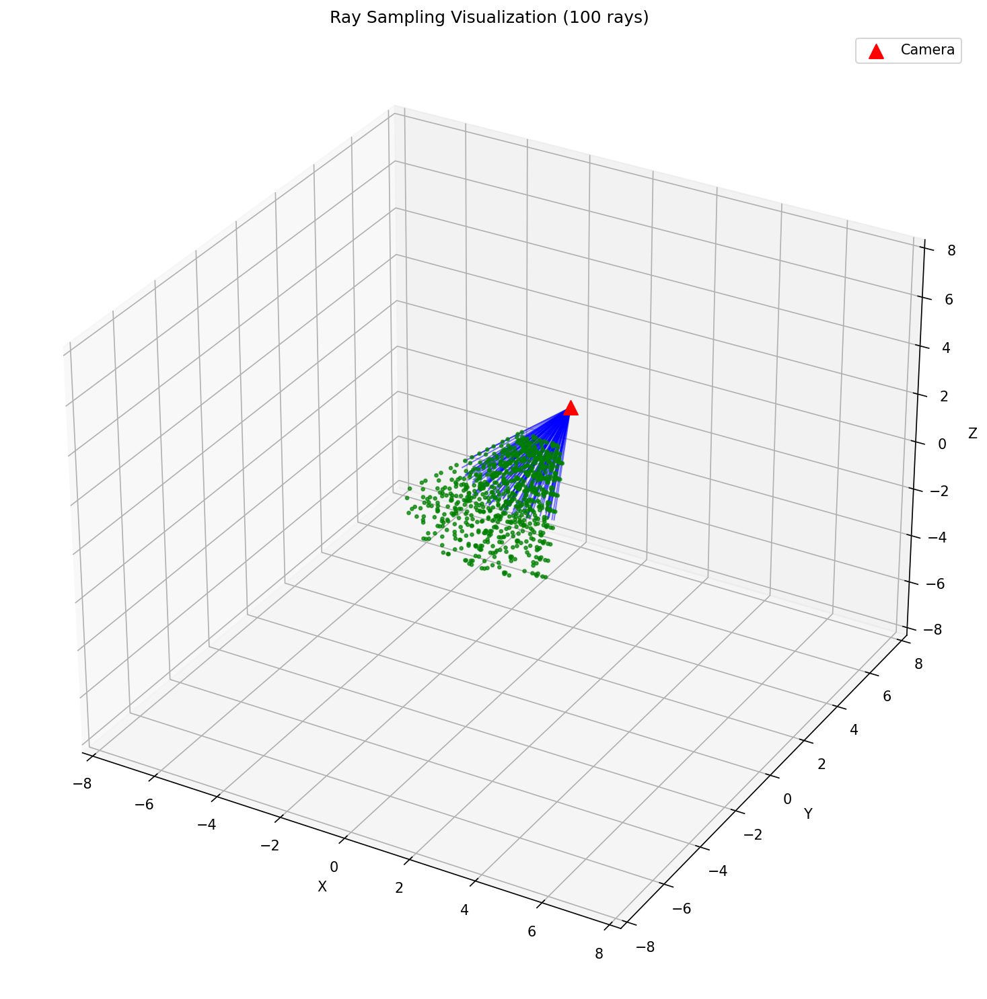
Cameras, rays, and sampled points in 3D space
Training Progression
Predicted images across iterations on the validation set.

Iteration 0

Iteration 1000

Iteration 5000

Iteration 10000

Iteration 20000
Validation PSNR Curve
PSNR on the validation set over training iterations.

Novel View Rendering
Spherical rendering video of the Lego scene using provided test cameras.
360-degree novel view rendering of the Lego scene
Part 2.6: Training with Your Own Data
Object Photos
Reference photos of the object used for NeRF training.

Object front view

Object side view

Object with ArUco tag
Novel View GIFs
GIFs showing camera circling around objects, demonstrating novel view synthesis.
My Custom Object

Novel views of my custom object from trained NeRF
Professor's Dataset (Lafufu)

Novel views of professor's Lafufu dataset from trained NeRF
Implementation Adjustments
Code Changes: [Describe any code modifications needed for your custom data]
Hyperparameter Changes: [Describe hyperparameter adjustments like near/far planes, learning rate, etc.]
Other Notes: [Any other implementation details specific to your custom data]
Training Loss Curve
Training loss over iterations for the custom object NeRF.

Intermediate Renders
Renders of the custom scene during training to show learning progress.

Iteration 0

Iteration 2000

Iteration 4000

Iteration 6000

Iteration 8000

Final Iteration